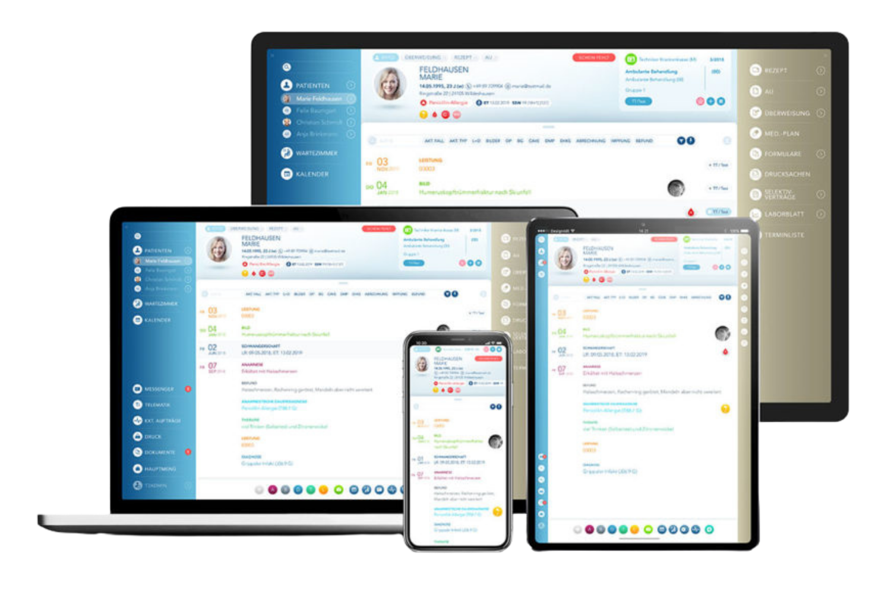

Praxissoftware kostet Zeit
Langsame Masken, umständliche Wege und unklare Abläufe bremsen Anmeldung, Dokumentation und Abrechnung.
Die netzwerft begleitet Arztpraxen beim Softwarewechsel, bei IT-Modernisierung, Telefonie und laufender Betreuung – klar geplant, persönlich begleitet und auf den Praxisalltag abgestimmt.
Spezialisiert auf Arztpraxen, T2med, TI/KIM/KBV und sichere Praxisprozesse.

Viele Praxen kennen das: Die Technik soll unterstützen, kostet aber täglich Zeit und Nerven. Das muss nicht so bleiben.
Langsame Masken, umständliche Wege und unklare Abläufe bremsen Anmeldung, Dokumentation und Abrechnung.
Wenn etwas klemmt, hängen Sie in der Warteschleife – statt schnell eine klare Antwort von einem festen Ansprechpartner zu bekommen.
Verschiedene Dienstleister für Software, Netzwerk und Telefon – und niemand fühlt sich zuständig, wenn es an den Schnittstellen hakt.
Datenmigration, Ausfallzeiten, ein neues System für das Team: Die Sorge, dass der Wechsel den laufenden Betrieb blockiert, hält viele zurück.
Wir installieren nicht einfach Software. Wir begleiten den Wechsel ganzheitlich – von der ersten Einordnung bis zum stabilen Betrieb. So bleibt Ihre Praxis handlungsfähig, während im Hintergrund alles vorbereitet wird.
Damit neue Software wirklich entlastet, muss sie zur IT, zur Telefonie und zu den Abläufen der Praxis passen. Genau hier verbindet die netzwerft Softwareverständnis mit Praxis-IT.
T2med ist der Einstieg – wir denken Software, IT, Telefonie und Sicherheit gemeinsam.
Von der Vorprüfung über Migration und Schulung bis zum sicheren Start – begleitet statt sich selbst überlassen.
Rechner, Server und Peripherie sauber eingerichtet – so, dass Ihr Team ohne Reibungsverluste arbeiten kann.
Warteschleifen, Fax-to-Mail und moderne Telefonie – damit Patienten Sie zuverlässig erreichen.
Stabile Netze und WLAN als Fundament – die Basis, auf der Software und Telefonie zuverlässig laufen.
Telematikinfrastruktur, sichere Kommunikation und Datenschutz – nach den Anforderungen für Arztpraxen mitgedacht.
Fester Ansprechpartner, schnelle Hilfe und Weiterentwicklung – statt anonymer Hotline und ständig neuer Kontakte.
Sie müssen den Wechsel nicht selbst steuern. Wir führen Sie Schritt für Schritt durch den Prozess.
Wir hören zu, verstehen Ihre Situation und ordnen ein, ob und wie ein Wechsel sinnvoll ist.
Gemeinsam definieren wir, was der Wechsel erreichen soll und wie Ihre Praxis arbeitet.
Wir planen Software, IT, Telefonie und Sicherheit als ein stimmiges Gesamtbild.
Migration, Einrichtung und Schulung – abgestimmt auf Ihren Praxisbetrieb.
Nach dem Go-live bleiben wir an Ihrer Seite – mit Support und Weiterentwicklung.
Wir sind kein anonymes IT-Systemhaus, sondern ein spezialisierter Partner für Arztpraxen im Raum Karlsruhe.
Wir kennen den Praxisalltag und die Anforderungen medizinischer Abläufe.
Ein Partner statt vieler Dienstleister – ohne Schnittstellen-Lücken.
Feste Ansprechpartner, die Ihre Praxis und ihre Technik kennen.
Wir verbinden Softwareverständnis mit echtem Praxis-Know-how.
Sicherheit und Vorgaben sind von Anfang an Teil der Planung.
Klare Schritte, klare Verantwortlichkeiten, klarer Zeitplan.
Kein Formular-Marathon. Nur das, was wir brauchen, um Sie richtig einzuordnen.
Wir prüfen gemeinsam, wo Ihre Praxis steht und welche nächsten Schritte sinnvoll sind.
Lieber direkt sprechen? 07243 350600 · info@dienetzwerft.de